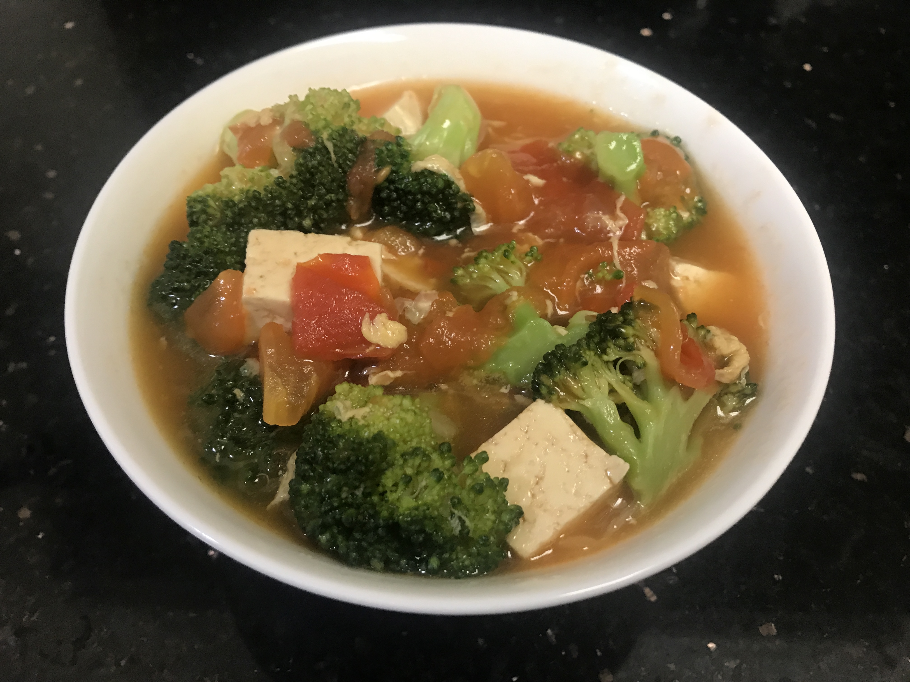
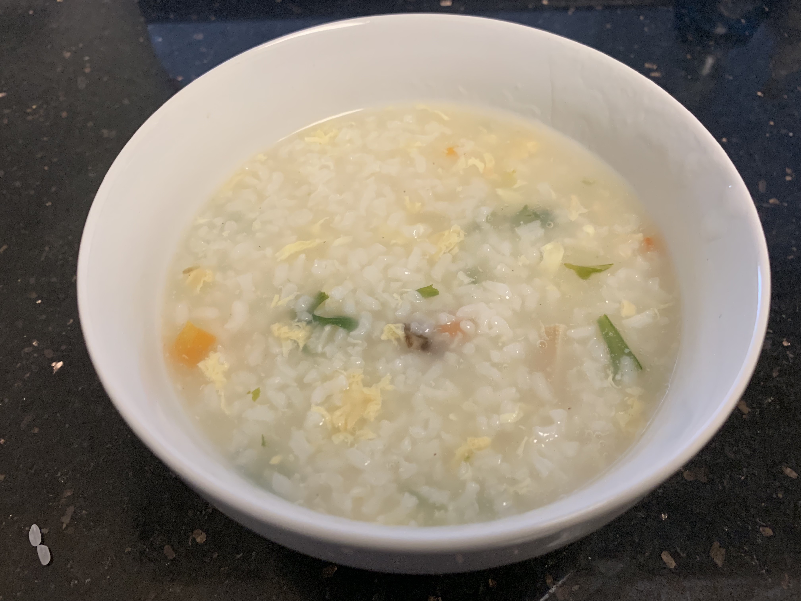
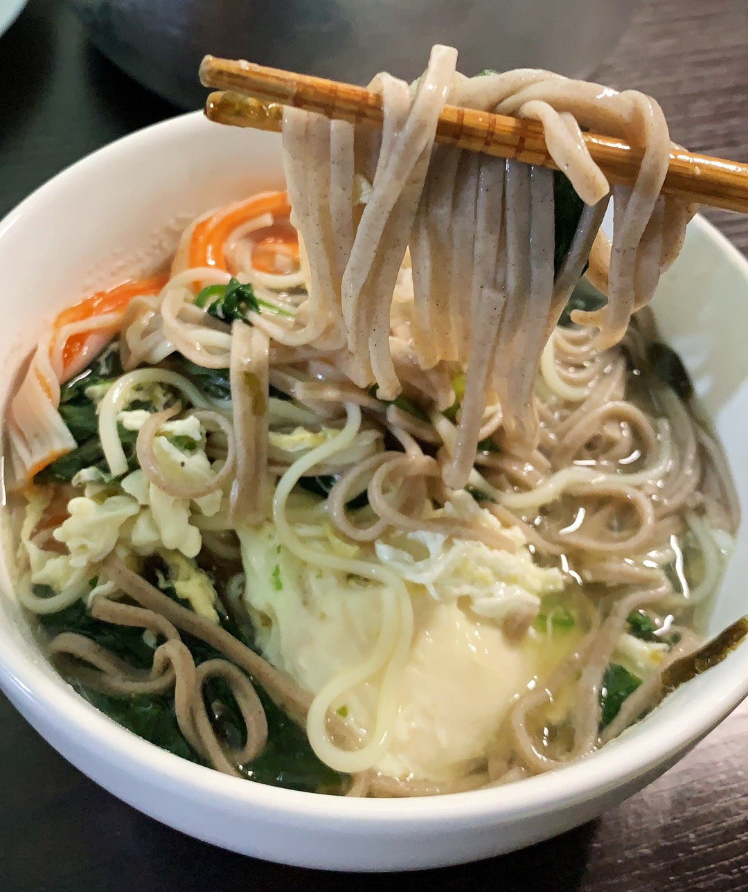

1.How to make a Tomato and Tofu Soup

Steps
-
- Diced bean curd, tomato diced, green onion diced, coriander diced, break the egg, mix them well.
- Heat up the oil, add the tomato, boil the juice, add water,add tofu,laver,broccoli.
- Add salt, light soy sauce, egg, add chopped green onion, coriander, drizzle sesame oil, mix together in the pot.
- Dishes out of the pot
2.How to make a Vegetable and Egg Porridge

Steps
Boil a small pot of white porridge.
Prepare vegetables and eggs.
green vegetables and eggs into the white porridge.
Bring to a low heat, stir well, bring to a boil.
Add the olive oil and salt to remove from the pan.
3.How to make a Noodle Soup

Steps
- Break apart and wash vegetables.
- Bring the water to a boil and add a little salt to the noodles.
- Mix the noodles and add cold water.
- Heat the pan with oil and beat in the eggs.
- Cut until golden on both sides.
- Roll the noodles and add the lettuce.
- Add a little salt and light soy sauce and lard to the bottom of the soup.